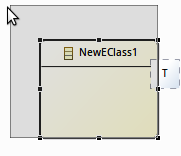
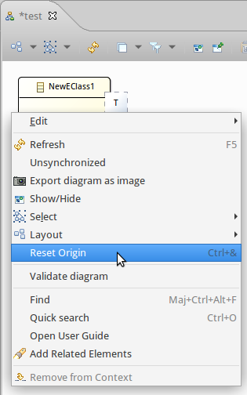
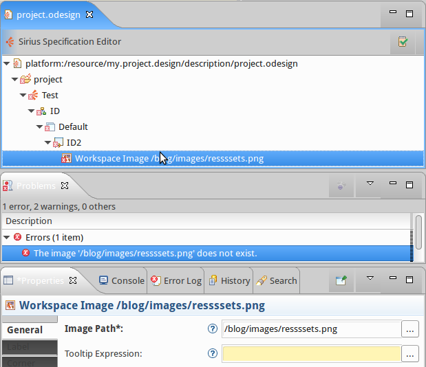
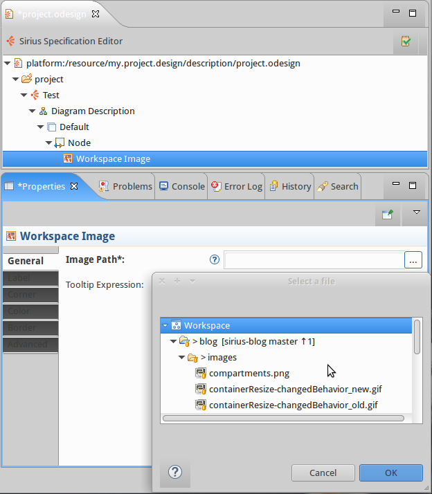
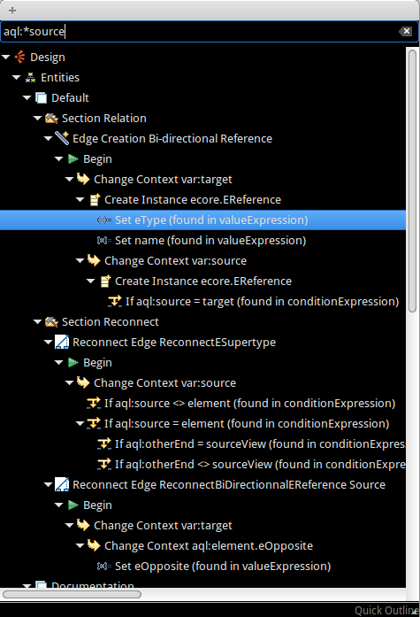

Harder, Better, Faster, Stronger

Today is a great day: with the announcement of Eclipse Mars, many great projects are released, and Sirius 3.0 is part of this release train.
When I have a look at the status of the Sirius project today, one soundtrack immediately comes to mind:
Harder, Better, Faster, Stronger
One first fact, looking at the project’s statistics, is that the Sirius team worked hard on this release to deliver some new cool features and improve the existing ones:
| Version | Date | Total Closed | Feature Requests |
| 1.0.0(Luna) | June 14 | 100 | 2 |
| 1.0.1 | Aug 14 | 20 | - |
| 2.0.0 | Oct 14 | 113 | 27 |
| 2.0.1 | Nov 14 | 2 | - |
| 2.0.2 | Dec 14 | 15 | - |
| 2.0.3 | Jan 15 | 16 | - |
| 2.0.4 | Feb 15 | 8 | - |
| 2.0.5 | Apr 15 | 8 | - |
| 3.0.0(Mars) | Jun 15 | 213 | 35 |
| 426 | 64 |
Their goal was to provide a better tooling for the end users by improving the diagram user experience. This work started with Sirius 2.0 and some of the following features have been there since then.


| Snap To Shape enabled by default for new diagrams |

|
| Snap To Grid now used when an element is created |

|
| Resize no longer change ports or children’s location |  |
| Actions to distribute shapes |

|
| Action to reset the diagram origin |  |


The editor was also improved to provide :


Vertical Stack and
Horizontal Stack. This means that the defined container will show its children as a vertical/horizontal stack of compartments. Thanks to this new feature, you are able to define a dynamic number of compartments.

As compartments also use queries, it is easy to create any artificial level of compartments independently from the metamodel structure.
Have a look at the Sirius compartments documentation for more details.
The goal was to be able to manage models with 1 million elements.

Sirius performances are in constant improvements, and this version comes with significant enhancements
on heap consumption and time execution.
| Time (sec) | Heap (Mb) | Time Variation | Heap Variation | |
| Open Huge Project | 80 | 276 | -31,00% | -20,00% |
| Open Big Class Diagram | 11 | 24 | -54,00% | +20,00% |
| Refresh Big Class Diagram | 0,731 | 0 | -18,00% | 0,00% |
| Save After Diagram Change | 26 | 0 | -23,00% | 0,00% |
| Close Diagram | 0,1 | -6 | 0,00% | 0,00% |
| Close Project | 55 | 294 | 0,00% | 0,00% |
On big operations, the model footprint is reduced by 20%. To do so, major work was done on:
Then the save strategy was reviewed as well as the diagram refresh and the image cache.
Another big task was to reduce the latency. First, on the UI runtime:
And then to reduce the latency on tables, SWT refreshes are now done in batch and the team also improved the table model refresh.
Performance is also your matter! It really depends on your .odesign specification. You should focus on queries : measure, improve and repeat! Think about using the Sirius embedded profiler:

The Sirius team also works to polish the specifier editor:


Ctrl+O and a wizard shows up to help you searching through the viewpoint specification.

If you are used to work with Sirius, you already know that writing queries can turn to a severe headache due to
types.

Actually, there are in Sirius 5 different interpreters to write your queries:
feature:
service:
var:
[/]
<%%>
For example, if we have a look at the following query :
What is the type of var:source?


Type analysis within the action language requires a stronger type information from interpreters. It is implemented in feature:, var:. We made some improvements in [/] and there is simply no support in legacy <%%> and ocl:. What we want is a good reference support.
The
Acceleo Query Language also known as AQL comes to our rescue. The implementation of AQL is specifically tailored for the Sirius use case. We have many variables for a given expression and
null values are common. The usage is really interactive and so the context is constantly changing.
I can hear you "Hoooo no, not yet
another language...". Don’t be afraid! You know OCL ? Then you know AQL.
The most important things to know is that:
filter,
collect,
eInverse(),
eResource()...
[name/] is invalid
becomes
self.name
[self.eContents()->select(name.startsWith('A'))/] is invalid
and becomes
self.eContents()->select(i | i.name.startsWith('A')
self.referenceWithNoValue.someOtherAttribute has no evaluation error, returns "Nothing"
AQL is not strictly compatible with MTL but a subset of MTL works for both.
We did some benchmarks with the different queries engines available in Sirius:

AQL is very impressive! In Sirius 3.0, it is delivered as an experimental feature.

But it will be available officially for the next 3.1 release, so consider using it from now on if you are still using Acceleo 2 expressions (
<%%>). Otherwise, if you are using MTL (
[/]), you can prepare your queries to make the migration easier.
To get more details about what is arriving in Sirius 3.0, have a look at the
release notes.
Even if Sirius 3.0 is major version, don’t be afraid! The models are automatically migrated by Sirius, the API changes are well documented in the release notes and some projects such as
EcoreTools or
UML Designer already use it with no major issues.
The 3.1 version is planned for November and the next topics of work will be: more flexibility for diagram UX, compartments feature complete, bullet-proof AQL and again more performance and scalability improvements... and your priority is our priority for the future. So don’t be shy and report what you need and want on the bugzilla
Let’s have Daft Punk conclude this post :
"More than ever
Hour after
Our work is
Never over"